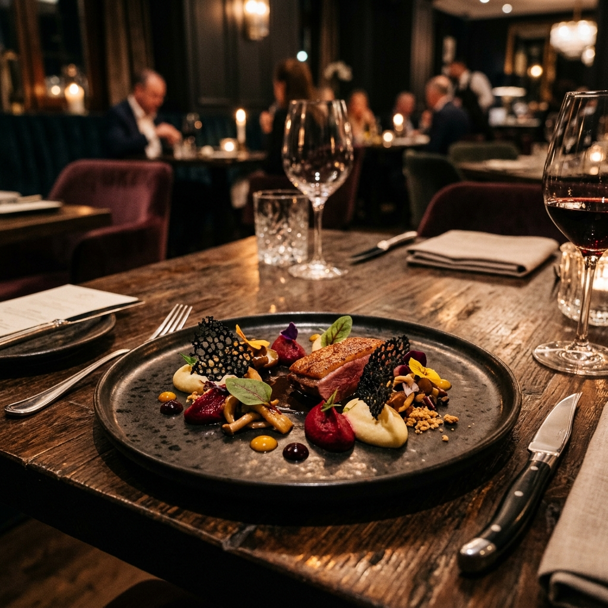

KOREA JOB
전 세계 우수한 전문 기능인력 및 이공계 수석 인재들을 엄선하여 대한민국 핵심 산업현장에 전속 취업 매칭하고 사증발급인정서 등 제반 법률 행정을 안전하게 대리합니다.
항공기 정비 • 조립 기술자 (E-7-1)
국내 대형 우주항공 부품 생산 기지 및 가공 공장에 초청 매칭되는 공학 전공 석·학사 항공 정비 조립 수석 전문가.

Executive Chef (E-7-2)프렌치 • 이탈리안 전문 쉐프 (E-7-2)
특급호텔 및 프리미엄 레스토랑의 헤드 셰프로 초청되어 하이엔드 다이닝을 주도할 글로벌 쿠킹 전문가 매칭.
면세점 및 럭셔리 유통 세일즈 (E-7-1)
글로벌 관광 및 쇼핑 명소, 국제공항 명품 아울렛 등에서 외국인 우수 바이어를 전담 케어할 최고 수준의 세일즈 전문가 매칭.
선박 정밀 용접 & 도장 기술자 (E-7)
정밀 선체 표면 처리 및 특수 강판 용접을 주도할 고기량 현지 기능 기술자를 검증하여 메이저 조선사에 최적 배치.
기계 • 전기공학 설계 기술자 (E-7-1)
로봇 정밀 제어, 사출 금형 설계, 냉동 기기 및 발전 설비 개발 연구소에 매칭될 해외 최수석 정밀 공학 석·학사 유치 대행.
Official Recruitment Flow
대한민국 조선해양플랜트협회 규정 및 산업통상자원부·법무부 법령을 철저히 이수하는 한강만의 독보적인 16단계 외국인력 도입 프로세스.
Demand Letter 송부
국내 중개업체가 규모·도입시기가 적힌 요청서를 해외 송출업체에 발송.
해외 송출 계획 제출
해외송출사가 자국 노동부에 인력송출 계획서 및 사업 허가 정식 요청.
주한 대사관 실사 지시
해외 노동부가 주한 자국 대사관에 국내 구인 업체의 고용 타당성 조사 지시.
주한 대사관 현장실사
대사관 관리가 국내 기업에 직접 출장하여 정식 근무 환경 실사 수행.
송출 허가서 발급
현장 실사 결과를 확인한 뒤, 해외 노동부가 정식 인력 송출 허가를 승인.
근로 대상 인력 모집
해외 송출업체는 요건에 맞는 근로자 모집 후 국내 중개사에 기량 대상 명단 통보.
조선협회 서류 제출
기량 검증 서류 및 근로 계약서를 정돈하여 한국조선해양플랜트협회에 제출.
현지 기량검증 조율
해외 송출사, 국내 중개업체, 조선협회가 합동으로 시험 장소 및 일정을 밀착 조율.
기량검증 최종 실시
한국 감독관이 직접 입회하여 해외 현장에서 고강도 실무 기량 테스트 집행.
합격자 명단 통보
조선해양플랜트협회에서 엄격히 채점 후 기량 합격 통보 및 인증서 발급.
협회 예비추천서 발급
합격한 근로자들을 정식 취업 대리하기 위해 조선협회 예비추천을 승인 신청.
산업통상자원부 추천
한국 조선협회의 서류 심사 완료 후, 산업통상자원부 장관 명의 추천서 발급 의뢰.
법무부 추천공문 이송
산업통상자원부에서 외투 및 국내 고용 필요성을 심사한 후 법무부로 정식 공문 이송.
사증인정신청 및 심사
대리인이 관할 법무부 출입국 관청에 사증발급인정서 및 아포스티유 서류 최종 심사 접수.
대사관 비자 최종 발급
출입국에서 사증인정번호를 발급하면, 근로자가 자국 대사관에 접수해 여권 비자 수령.
입국 및 산업 현장 투입
외국인 근로자의 최종 공항 정식 입국 인솔 및 대한민국 조선 사업장에 출근 관리 완료.